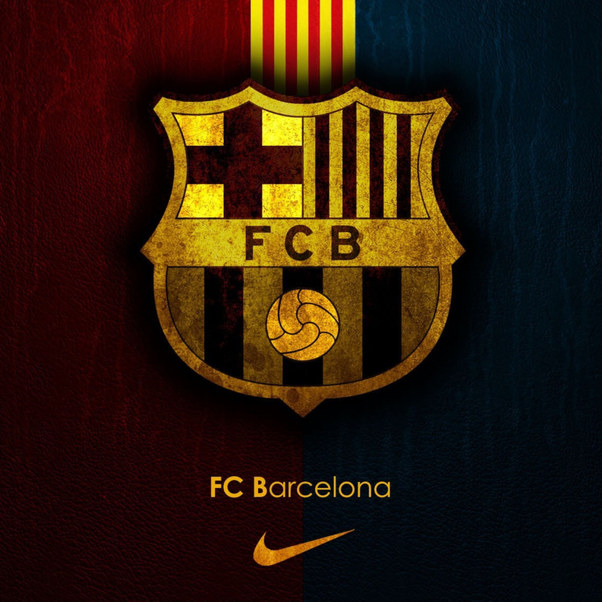

Football Club


The history of Futbol Club Barcelona goes from the football club's founding in 1899 and up to current time. FC Barcelona, also known simply as Barcelona and familiarly as Barça, is based in Barcelona, Catalonia, Spain. The team was founded in 1899 by a group of Swiss, English and Spanish footballers led by Joan Gamper. The club played amateur football until 1910 in various regional competitions. In 1910, the club participated in their first of many European competitions, and has since amassed fourteen UEFA trophies and a sextuple. In 1928, Barcelona co-founded La Liga, the top-tier in Spanish football, along with a string of other clubs. As of 2020, Barcelona has never been relegated from La Liga, a record they share with Athletic Bilbao and arch-rival Real Madrid. The history of Barcelona has often been political. Though it was a club created and run by foreigners, Barcelona gradually became a club associated with Catalan values. In Spain's transition to autocracy in 1925, Catalonia became increasingly hostile towards the central government in Madrid. The hostility enhanced Barcelona's image as a focal point for Catalonism, and when Francisco Franco banned the use of the Catalan language, the stadium of Barcelona became one of the few places the people could express their dissatisfaction. The Spanish transition to democracy in 1978 has not dampened the club's image of Catalan pride. In the 2000s – a period of sporting success in the club and an increased focus on Catalan players – club officials have openly called for Catalonia to become an independent state.
FC Barcelona won their first trophy in 1902 when they lifted the Copa Macaya, which was the predecessor to the Catalan Championship. The club won the Catalan Championship a record 23 times during the 40-year span of the tournament. When national league was established in 1929, the importance of the regional league declined, and it was abandoned in 1940. From then on, Barcelona did not participate in regional competitions until the establishment of the Copa Catalunya in 1993, a cup they have won a record nine times. They are the most successful club in Spain, having won a total of 75 domestic titles: 26 La Liga, a record 31 Copa del Rey, a record 13 Supercopa de España, a record three Copa Eva Duarte[note 1] and a record two Copa de la Liga and 5 Champions League. The club is also one of the most successful clubs in international club football, having won 22 official trophies in total, 14 of which are UEFA competitions and 8 approved by FIFA. They have a joint-record two Latin Cup, a record three Inter-Cities Fairs Cups (Official by FIFA), five UEFA Champions League titles, a record five UEFA Super Cup, a record four UEFA Cup Winners' Cups, and three FIFA Club World Cup trophies, only behind Real Madrid with 4.